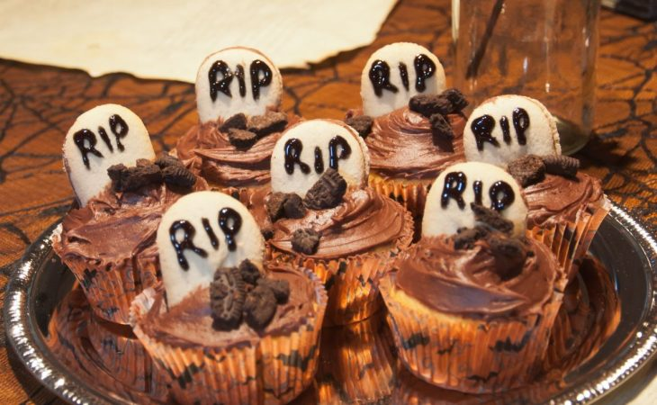

Receita de Cupcake Halloween
O cupcake de café com chantilly é uma deliciosa combinação entre o sabor intenso do café e a leveza da cobertura cremosa. Essa receita é perfeita para surpreender convidados em ocasiões especiais ou simplesmente para acompanhar um café fresquinho no fim da tarde.
Com ingredientes simples e um preparo descomplicado, você vai criar cupcakes fofinhos, aromáticos e com uma finalização elegante. O contraste entre a massa de chocolate e o toque de café transforma essa sobremesa em uma experiência única e irresistível.
Ingredientes
- 3 xícaras de chá de farinha de trigo
- 1 xícara de chá de chocolate em pó
- 2 xícaras de chá de açúcar
- 3 ovos
- 1 xícara de chá de leite
- 3/4 de xícara de chá de óleo
- 1 colher de chá de fermento químico em pó
- 1 colher de chá de bicarbonato de sódio
Ingredientes do crumble
- 80 gramas de bolacha maizena
- 40 gramas de manteiga derretida
- 15 gramas de cacau em pó
Finalização
- Chantininho
- Bolachas maizena
- Chocolate ao leite derretido
- Chocolate branco derretido
Modo de Preparo
Modo de preparo da massa
- Em uma batedeira, coloque todos os ingredientes da massa (menos o fermento e o bicarbonato) e bata até misturar bem.
- Adicione o fermento, o bicarbonato e bata até incorporar.
- Transfira a massa para forminhas de cupcake, preenchendo metade do espaço, e leve para o forno preaquecido a 180 ºC por cerca de 30 minutos.
Modo de preparo do crumble
- Coloque as bolachas em um processador e triture grosseiramente.
- Transfira para um recipiente, adicione o cacau em pó, a manteiga derretida e misture até tudo incorporar bem e ficar na cor marrom-claro.
Finalização - referência: Receita Cupcake